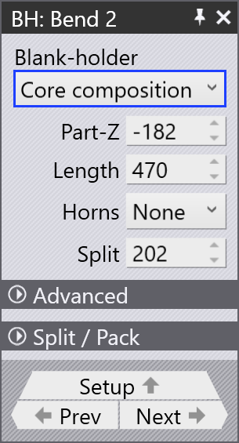

Redigér nedholderne
Under automatisk værktøjsmontering genererer TecZone Fold en nedholdersammensætning, så mange bukninger som muligt kan bearbejdes med den indledende sammensætning. Nedholder- sammensætning kan også justeres manuelt for at imødekomme forskellige del- geometrier og bukningskrav.
Nedholderpanel (BH)
Klik på den øverste nedholder for at åbne BH-panelet. Dette panel giver dig mulighed for at redigere nedholderegenskaberne (for en valgt bukning), herunder ændring af nedholder- sammensætning, brug af ENW-værktøj, ændring af typen af ENW-værktøj osv.
Klik på rullemenuen Blank-holder for at ændre nedholdertypen:


-
ENW tool - Denne mulighed bruges til at vælge typen af ENW-værktøj til en specifik bukning. Informationen vises i bukningsnavigatorcellen.
-
Core composition - Den indledende nedholdersammensætning, som er standardnedholderen uden yderligere værktøjer.
-
Tool Change (FZ23) - Programmér en ny nedholdersammensætning ved hjælp af FZ23- funktionen.
Part-Z: Brug denne mulighed til at flytte delen langs Z-aksen. Dette er nyttigt til justering af delens position i maskinen langs bukningslinjen.
Length: Redigér nedholderlængden. TecZone genererer automatisk en nedholdersammensætning, der matcher den angivne længdeværdi.
Z-offset: Denne mulighed bruges til at forskyde ENW-værktøjet langs Z-aksen.
Horns: Vælg hvilke hornstykker, der skal inkluderes i nedholdersammensætningen. Du kan vælge venstre, højre eller begge horn.
Offset: Dette er afstanden mellem maskinens center og center af nedholderen.

Split: Længden af afstanden mellem højre kant af kernesammensætningen og det første ubrugte stykke (gråtonet) til højre for nedholderen.
Avanceret
Horn Retract: Vælg None for at deaktivere horn retract. Horn retract kan aktiveres ved at vælge enten venstre, højre eller begge horn.
Split / Pack og Extra Split / Pack
Disse muligheder kan bruges til at opdele og pakke stykker i nedholder- sammensætningen. Split bruges til at skabe en afstand mellem værktøjer, mens Pack bruges til at lukke en afstand mellem værktøjer.
Mulighederne Split/Pack og Extra Split/Pack bruges til at justere afstandene mellem værktøjerne.
For at skabe en split flyttes værktøjer udad; for at pakke dem flyttes de indad.
| Kun én eller to split for hver side af nedholderen understøttes (for eksempel er det ikke muligt at have tre split på venstre side og en på højre side). Maksimalt fire split i alt er mulige: to på hver side. |
| Bredden af en standardnedholder er 160 mm, og bredden af en nedholder med horn er 199 mm. |
Split / Pack
Left eller Right: Vælg siden (venstre eller højre) for split/pack-operationen.
-
Valg af 0 vil aktivere en Split / Pack i slutningen af kernesammensætningen.
-
Valg af en negativ værdi (for eksempel -160) vil tilføje en afstand mellem kernesammensætningen.
-
Valg af en positiv værdi (for eksempel +199) vil tilføje et nyt stykke i slutningen af kernesammensætningen.
Left eller Right gap: Redigér mængden af standardafstand for det valgte venstre/højre stykke af nedholderen.
Extra Split / Pack
Left1 eller Right1: Vælg standardstykket, efter hvilket den ekstra afstand introduceres. Normalt er der otte standardstykker tilgængelige ekskl. en horn- nedholder.
Left Gap1 eller Right Gap1:
Redigér mængden af ekstra afstand efter standardstykkerne.
|
Hvis ekstra afstand er aktiveret her, kan standardafstand i Split / Pack ikke redigeres længere. Denne mulighed er ikke tilgængelig for nedholdertypen Tool Change (FZ23). |